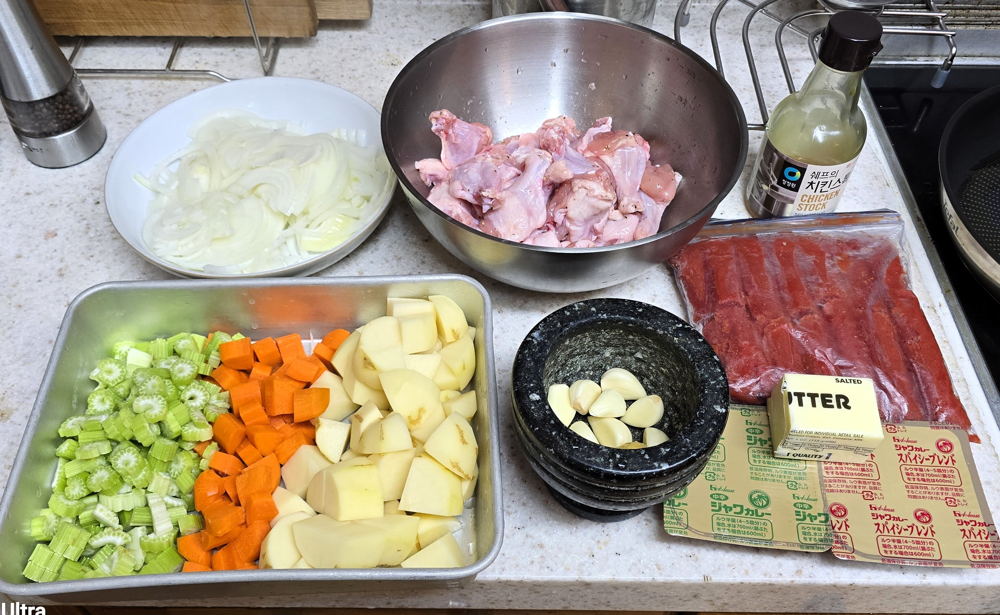
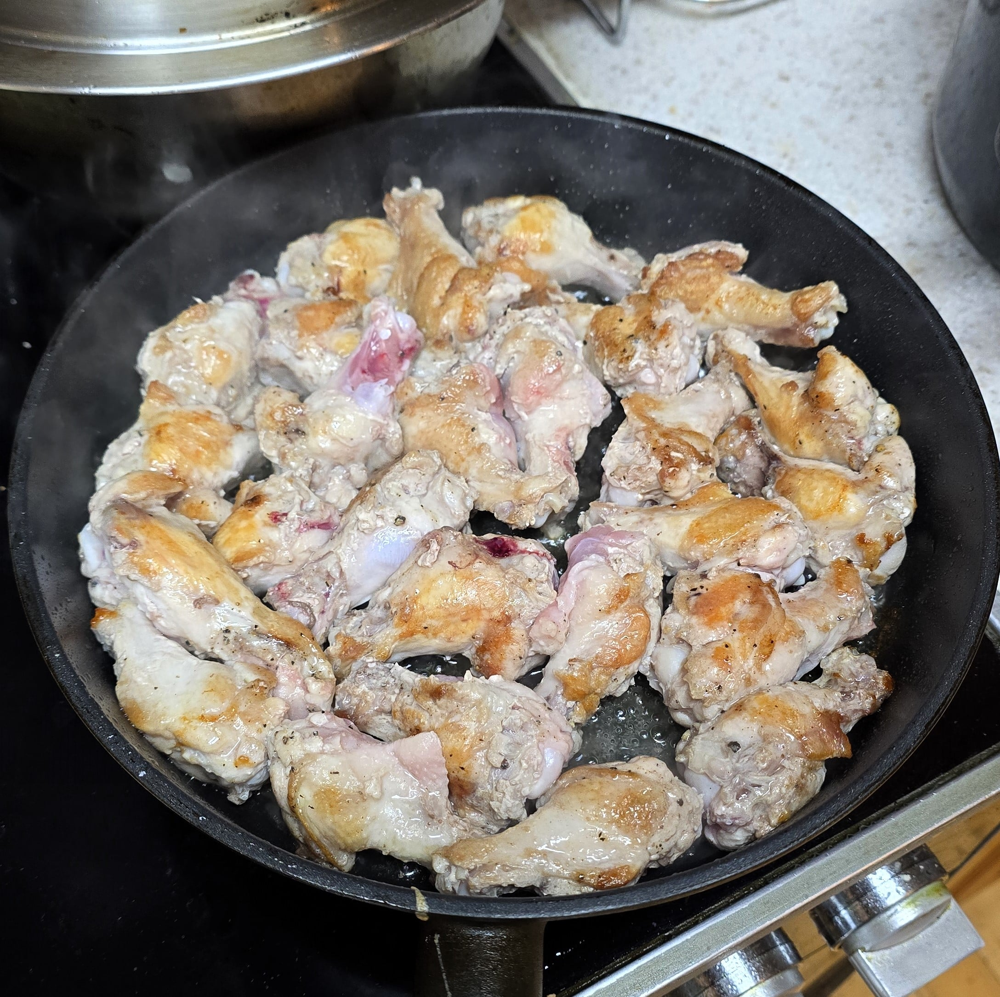
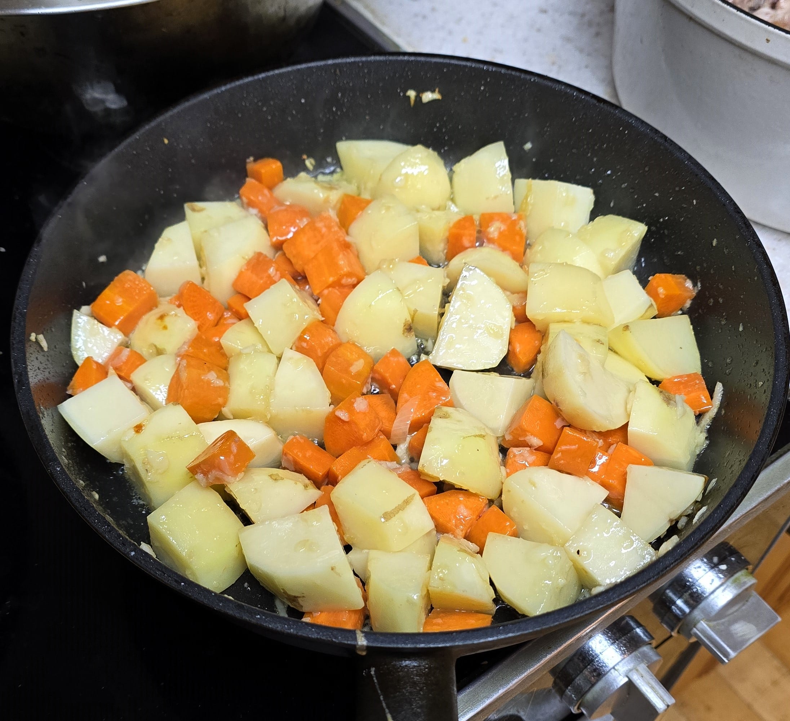
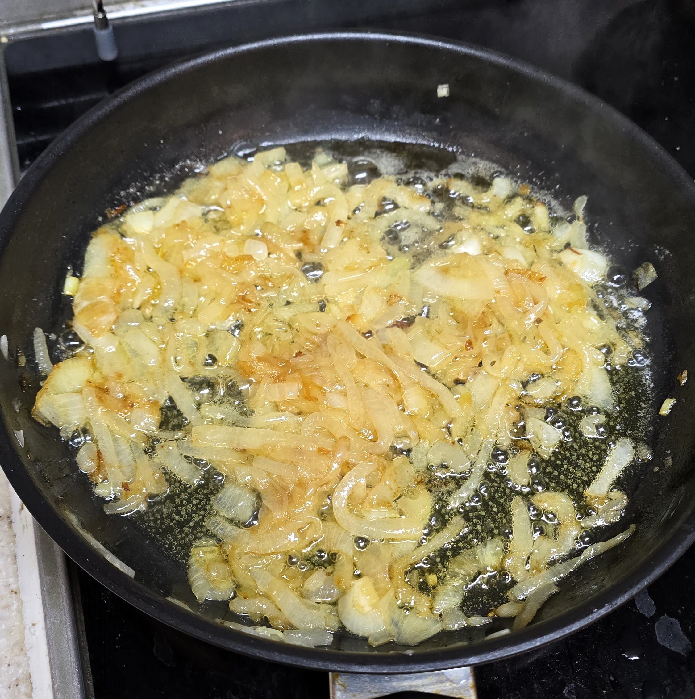
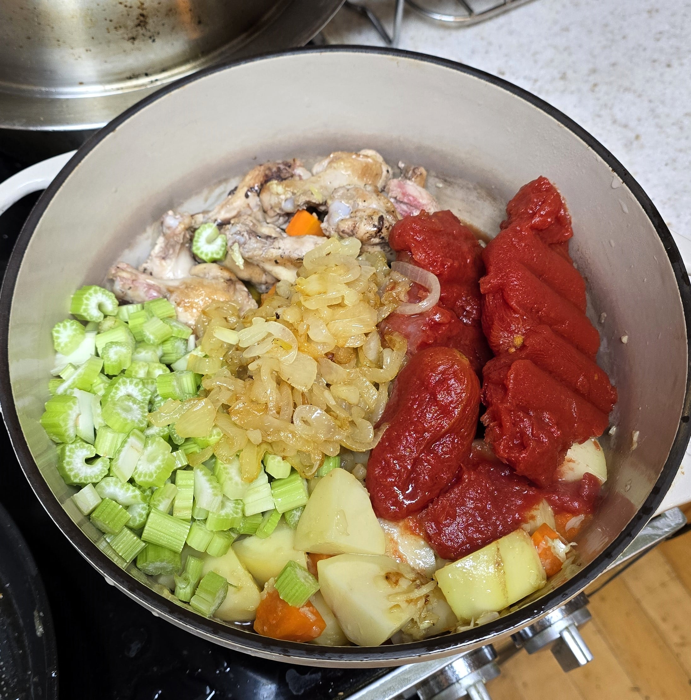

빨간건 얼린 토마토야

구워구워

볶아뽂아

버터에 30분 볶아줘

재료들 냄비에 투하
짠! 완성
카레향이 좋아
페페짤처럼 먹으니깐 행복해졌어

빨간건 얼린 토마토야

구워구워

볶아뽂아

버터에 30분 볶아줘

재료들 냄비에 투하
짠! 완성
카레향이 좋아
페페짤처럼 먹으니깐 행복해졌어


닭고기? 나는 맨날 소고기로만 했는데 맛이 어때??
부자다이 닭고기는 야들 담백해서 마딨어
아니 샐러리를 왜..
토마토홀 넣는 스튜에도 종종 쓰임 맛나요
왜 우울했어?
샐러리 ㅅㅂ
닭도리탕은 얼마나 우울하면 해먹냐 담엔 닭도리탕좀
당근 더 작게썰던가 넣지말지 ㅡㅡ
양파 30분에서 포기
카레에 당근넣는놈은 싸이코임
양당셀은 인정입니다
임마 이거 닭도리탕에 카레가루넣었네
엥 우쿨렐레 어디감
난 닭은 따로 튀겨서 얹는데 보통
맛있겠다
몇명이 우울한거야?
샐러리 당근 양파 이거 프렌치 근본조합 아닌가 약간 뵈르기뇽같은 카레네.. 퓨전 수프 카레 같당
밥을 왜 그거밖에 안먹어 유치원생이야??
양파를 두배넣고 1시간 볶아 유툽 카레괴인 참고
대체 얼마나 우울했던거야?
얼마나 우울해야 이정도 요리가 나오는건지 감도안옴ㅋㅋ
순살아닌건 좀 에반데
이거는 그냥 카레 닭도리탕 아니냐고..
때깔 지기네 맛나겄다
잘 만들었네
난 저기에 요거트 넣는 것 좋아해
좀더 우울하게 해주마!!
코스트코 다니는 개붕이구나
토마토 넣으면 맛 어떻게 변해?
(토마토 넣은 맛으로 변해 이런거 말고, 궁금해)
뼈?..........
사형